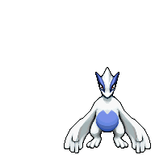
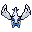

Pokédex / #249

Lugia #249
PsychicFlying
It is said to be the guardian of the seas. It is rumored to have been seen on the night of a storm.
Generation 2 · Johto

Stats
| Attack | 90 | |
|---|---|---|
| Defense | 130 | |
| Sp. Atk | 90 | |
| Sp. Def | 154 |
In the wild
| Wild level | 100–100 |
|---|---|
| HP | 106 |
| Experience | 15 |
| Egg groups | – |
Evolution
- Does not evolve.
Moves
| Level | Move | Type | Category | Power | Energy | Cooldown | Effect | |
|---|---|---|---|---|---|---|---|---|
| 1 | Tackle | Normal | Physical | 15 | 15 | 1s | Tackle is one of the most common and basic moves a Pokemon learns. It deals damage with no additional effects. | |
| 5 | Gust | Flying | Special | 40 | 40 | 9s | Gust deals damage and has no secondary effect. | |
| 10 | Recover | Normal | Status | – | 90 | 120s | User recovers 50% of its max HP. | |
| 15 | Icy Wind | Ice | Special | 55 | 65 | 13s | Icy Wind deals damage and lowers the target's Speed by one stage. | |
| 20 | Aqua Tail | Water | Physical | 90 | 90 | 14s | Aqua Tail deals damage and has no secondary effect. | |
| 25 | Rain Dance | Water | Status | – | 100 | 60s | Raind Dance raises the user's Attack and Defense by one stage. | |
| 30 | Ancient Power | Rock | Special | 60 | 70 | 14s | Ancient Power inflicts damage and has a 10% chance of raising all of the user's stats by one stage. | |
| 35 | Extrasensory | Psychic | Special | 80 | 95 | 18s | Extrasensory inflicts damage and has a 10% chance of causing the target to flinch. | |
| 40 | Dragon Pulse | Dragon | Special | 85 | 95 | – | Dragon Pulse deals damage and has no secondary effect. | |
| 45 | Aeroblast | Flying | Special | 100 | 110 | 23s | A vortex of air is shot at the target to inflict damage. Critical hits land more easily. | |
| 50 | Hydro Pump | Water | Special | 110 | 120 | 27s | Hydro Pump inflicts damage and has no secondary effect. | |
| 55 | Future Sight | Psychic | Special | 120 | 120 | 15s | Future Sight deals damage, but does not hit until two turns after the move is selected. | |
| 60 | Calm Mind | Psychic | Status | – | 70 | 60s | Calm Mind raises the user's Special Attack and Special Defense by one stage each. | |
| 65 | Sky Attack | Flying | Physical | 140 | 140 | 24s | Nothing will happen on the first turn. On the second turn, Sky Attack deals damage and has a 30% chance of causing the target to flinch. |
Field abilities
StrengthWaterfallFindRock SmashHeadbutt
Special abilities
Pressure
Egg moves
None
Technical machines
Aerial AceAvalancheBideBlizzardCalm MindDouble EdgeDouble TeamDream EaterEarthquakeGiga DrainHailHeadbuttHyper BeamIce BeamIcy WindIron TailLight ScreenMimicMud SlapNightmarePsychicRageRain DanceReflectRestRoarSafeguardSandstormShadow BallShock WaveSteel WingSubstituteSwiftThunderThunder WaveThunderboltToxicWater PulseZap Cannon
Drops
| Item | Amount | Chance | |
|---|---|---|---|
| Mind Plate | 1–10 | 100% | |
| Sky Plate | 1–10 | 100% | |
 | lugia doll | 1 | 0.1% |
| TM 36 | 1 | 0.1% | |
| TM 40 | 1 | 0.01% | |
| TM 55 | 1 | 0.01% |